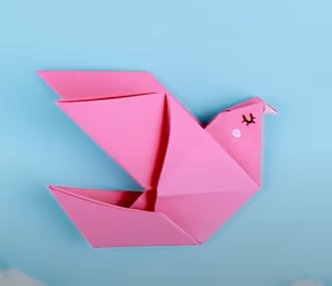
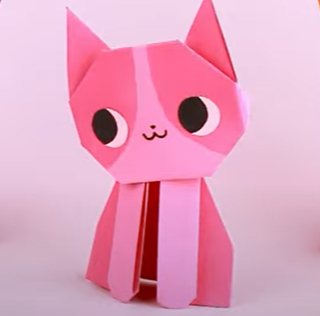
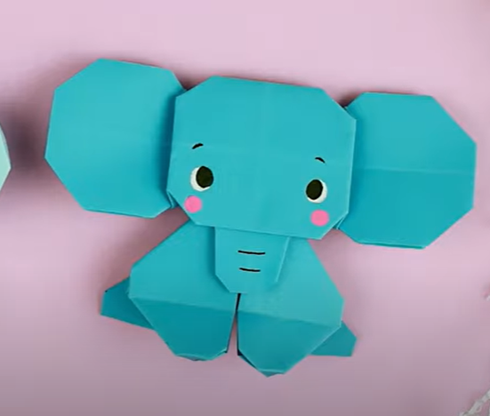
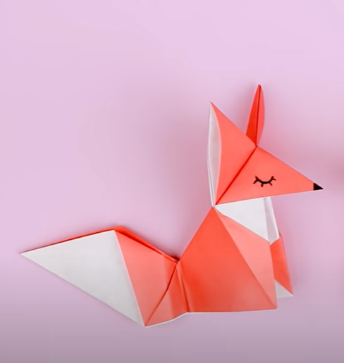
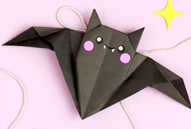
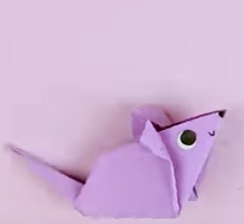
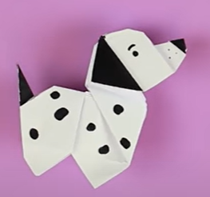
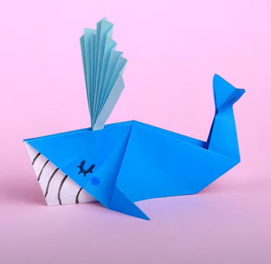

Origami Tutorials
Origami is the art of paper folding, which is often associated
with Japanese culture. In modern usage, the word "origami" is
used as an inclusive term for all folding practices, regardless
of their culture of origin. Trying to find good origami tutorials
on the internet can be hardwork. So, we've put together the
largest collection of free origami tutorials anywhere on the internet.
Origami Designs

bird
- Birds have feathers, wings, lay eggs and are warm blooded.
- There are around 10000 different species of birds worldwide.
- Scientists believe that birds evolved from theropod dinosaurs.

cat
- The hearing of the average cat is at least five times keener than that of a human adult.
- Cats can rotate their ears 180 degrees.
- Cats have been shown to help people get over their loss more quickly, and show less physical symptoms of pain, like crying.

elephant
- They're the world's largest land animal.
- You can tell the two species apart by their ears.
- Despite their great size, elephants are known to be gentle creatures.

fox
- Although red foxes are part of the Canidae family along with dogs, they have more in common with cats.
- By far the most common and widespread species of fox is the red fox.
- Foxes live on every continent except Antarctica.
panda
- Like domestic cats, giant pandas have vertical slits for pupils.
- At 5 months old, giant pandas learn how to climb - sometimes practicing by climbing on their mum.
- Giant pandas spend 10-16 hours a day feeding, mainly on bamboo. .

bat
- Bats can find their food in total darkness.
- Bats are the only flying mammal.
- Night insects have the most to fear from bats.

mouse
- Mice have a number of predators including cats, wild dogs, foxes, birds of prey, and snakes.
- Mice tails can grow as long as their bodies.
- Mice use their whiskers to sense changes in temperature and to help feel the surface they are walking along.

dog
- Dogs noses are wet to help absorb scent chemicals.
- Dogs can sniff at the same time as breathing.
- Dogs don't sweat like we do.

Whale
- Blue whales are the largest animals to have ever existed.
- A blue whale's tongue alone can weigh as much as an elephant—its heart as much as an automobile.
- Earth's largest animal, the blue whale can eat some 4 to 8 tons of krill per day.